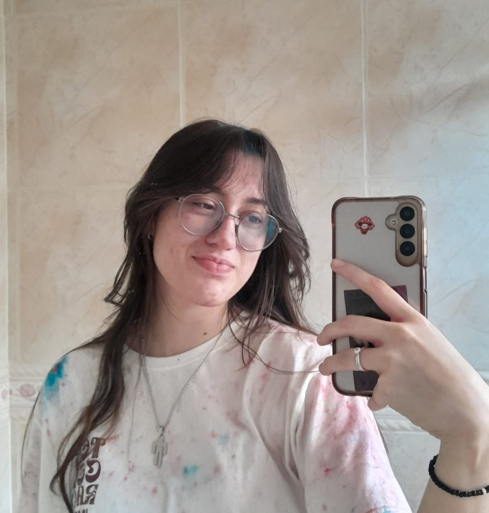

Hello, World! Meu nome é Valentina, tenho 18 anos, sou estudante de Analise e Desenvolvimento de Sistemas na IDEAU. Sempre fui apaixonada pela tecnologia, fazendo com que me trouxesse onde eu estou hoje.
Nesse momento meu foco principal de estudos é a programação web, mesmo sendo apixonada por desenvolvimentos de jogos;